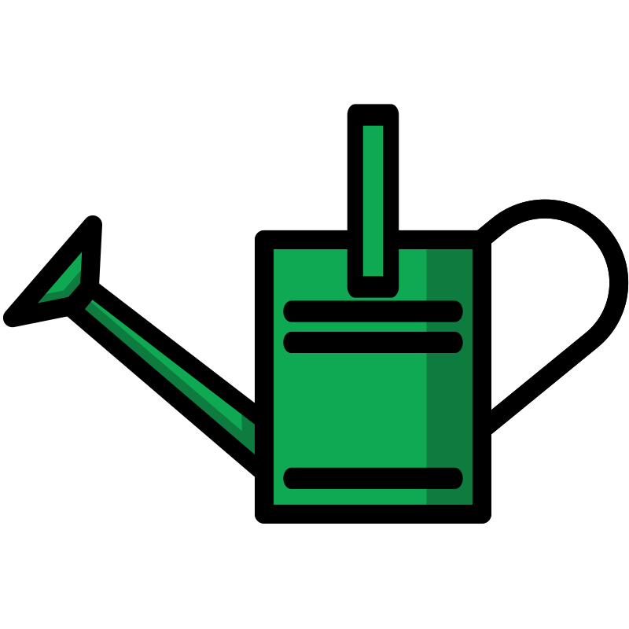
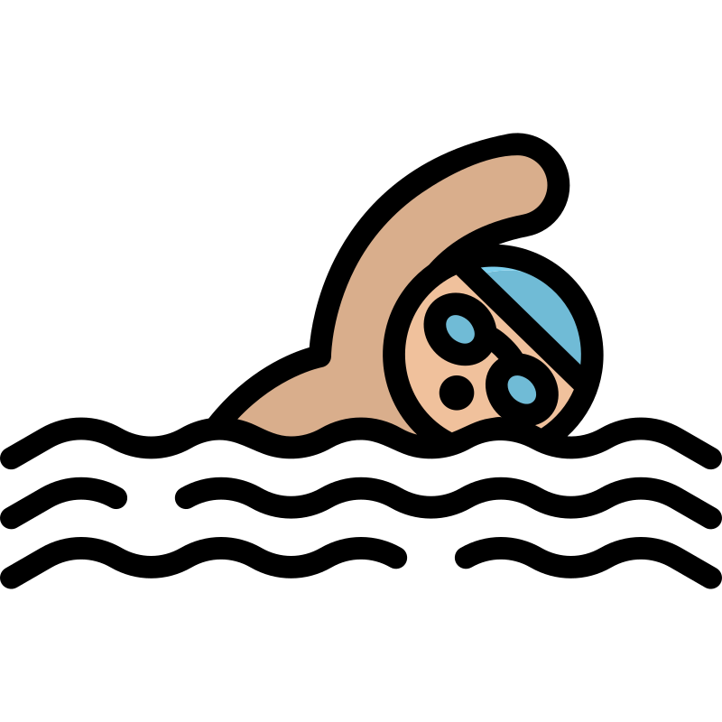

Maxime Malandain
Informations
- 29 ans
- Permis B véhiculé
- Adresse: 27000 Evreux
- Mail: m.malandain-dev@ikmail.com
- Téléphone : 06 21 41 50 58
- Linkedin : linkedin.com/in/maxime-mld/
- Mon portfolio : portfolio-maxime-malandain.netlify.app
A propos de moi
Mon parcours professionnel m'a conduit à des années d'engagement au sein des forces de police, une carrière que j'ai abordée avec passion et dévouement. En tant que policier, j'ai eu l'opportunité de servir les citoyens, de faire preuve de leadership et de prendre des décisions cruciales dans des situations complexes.
Cependant, au fil des années, une deuxième passion a émergé : l'informatique. Mon intérêt pour le monde de l'informatique et du développement web est devenu de plus en plus évident au fil du temps. Les aspects fascinants de la programmation, de la création d'applications et de la résolution de problèmes techniques m'ont toujours attiré. C'est ainsi que j'ai décidé d'explorer cette passion naissante et d'embrasser une nouvelle carrière en tant que développeur web.
Les multiples compétences apprisses en formation en développement front-end et back-end me permettent de concevoir des applications web complètes et fonctionnelles, tout en respectant les normes de sécurité et en offrant une expérience utilisateur optimale. Je suis impatient de mettre en pratique ces compétences dans ma nouvelle carrière de développeur web et de contribuer de manière significative à des projets innovants.
Autres informations
- Anglais Niveau technique
- PSC1 (secourisme)
- BIA (Brevet d'Initiation Aéronautique)
- Développeur Web & Mobile BAC+2 (résultat 01/24)
- Potager
-
 Lecture
Lecture
- Natation
Développeur JavaScript
Spécialisé en React
Formation
Formation Développeur Web & Mobile, Niveau V (Février-Aout 2023)
798 heures intensives Ecole O'Clock
➜ 3 Mois de Socle ( HTML/CSS/JS/Node-Express PostgresSQL / Sequelize)
➜ 1 Mois de spécialisation (React / Redux / Typescript)
➜ 1 Mois de Projet FullStack (en équipe mis en ligne)
Formation Gardien de la Paix (2020)
1 an Ecole de Police Rouen-OisselFormation Policier Adjoint (2018)
3 mois Ecole de Police Rouen-OisselBaccalauréat Général Economique et Social (2013)
Lycée Galilée Franqueville-Saint-PierreExperiences
Police Nationale (2018 - actuellement)
Policier en Police Secours, Judiciaire , CRS
Employé Polyvalent Grande Distribution (2014 - 2017)
Carrefour Tourville la RivièreHôte de caisse, Arrière Caisse, Comptabilité, Mise en Rayon, Boucherie, Boulangerie
Hard Skills
-
➜ HTML, CSS, SCSS(SASS), Materiel UI
-
➜ ReactJS, Redux, JavaScript Vanilla , Typescript
-
➜ Node.js , Express , PostgreSQL , Sequelize
-
➜ Git , Visual Studio Code , Linux, MVC , Méthode Agile , Scrum , Rédaction d'un cahier de charges, wireframes et user stories Mocodo